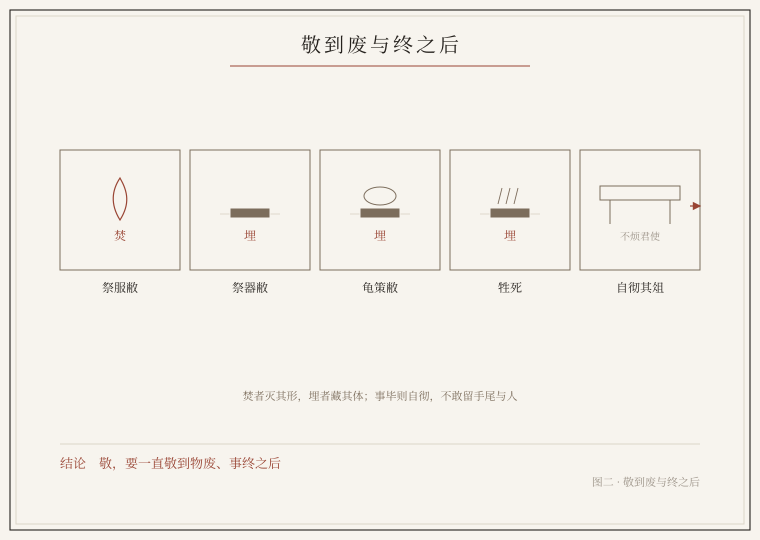

曲礼上 · 一·一百一十 · 第 108 课
临祭不可怠惰；祭服、祭器、龟策坏了，各有处置；助君之祭，要自己撤俎。
说什么事：临祭不惰。祭服敝则焚之，祭器敝则埋之，龟策敝则埋之，牲死则埋之。凡祭于公者，必自彻其俎。
落在哪一层：仪，兼及礼意。讲的是「不亵」。
为何编在此位：上节言公责，此节言祭事。责在人，敬在神。
【经】臨祭不惰。祭服敝則焚之，祭器敝則埋之，龜策敝則埋之，牲死則埋之。凡祭於公者，必自徹其俎。
【注】為無神也。此皆不欲人褻之也。焚之，必已不用；埋之，不知鬼神之所為。臣不敢煩君使也。大夫以下，或使人歸之。祭於公，助祭於君也。
惰 注「为无神也」。疏「祭如在，故临祭须敬，不得怠惰」；「祭若怠惰，则神不歆，是无神也」。
敝 破旧。非毁弃。
焚／埋之别 疏「服是身著之物，故焚之；牲器之类，并为鬼神之用，虽败，不知鬼神用与不用，故埋之犹在，焚之则消」。
龟策 龟甲与蓍策，卜筮之具。
彻其俎 撤去载牲之俎。注「臣不敢烦君使也」。
祭于公 注「助祭于君也」。疏「此谓士助君祭也。若大夫以上，则君使人归之于俎」。
临祭不可怠惰。祭服破了就烧掉，祭器破了就埋掉，龟甲蓍策破了就埋掉，祭牲死了就埋掉。凡助君之祭，必须自己撤去载牲的俎。
一节五句，前一句讲态度，中四句讲处置，末一句讲分寸。态度是「不惰」，处置是「不亵」，分寸是「不烦」。三样合成一件事：敬，要一直敬到东西废了、事完了之后。
第一层 为无神也 注四字极狠。怠惰之时，神即不在——不是神不来，是你心里已经没有神了。
第二层 焚与埋之别 疏分得清：贴身的烧，通神的埋。烧是灭其形，埋是存其体而藏之。处置方式，即是敬的方式。
第三层 牲死则埋 牲已死，祭已废，仍不可弃。物的尊严，来自它曾被用于何事。
第四层 必自彻其俎 注「臣不敢烦君使也」。事毕而不留手尾与人，是最实的敬。
与今日何干 用完即弃的文化里，此节提醒：东西废了，也有废的规矩；事办完了，也有收的方式。
| 左 | 右 |
|---|---|
| 临祭不惰 | 祭如在；惰则无神 |
| 祭服敝则焚 | 身著之物，焚以灭形 |
| 祭器敝则埋 | 鬼神之用，埋以藏体 |
| 龟策敝则埋 | 通神之具，不与凡物同弃 |
| 牲死则埋 | 已死不可他用 |
| 祭于公必自彻其俎 | 臣不敢烦君使 |
画同一处祭所的两种处置：左侧一堆微火与一卷烧残的衣角，火苗极小、灰烬成一小撮；右侧地面上三个浅坑，坑内分别放着一只残破的器皿、一枚龟甲、一副蓍草，坑边土色新翻。两处之间立着一只空着的载牲木俎，俎已搬离原位、斜放在一侧。不画人、不写文字。赭色只用在左侧那卷烧残的衣角。
